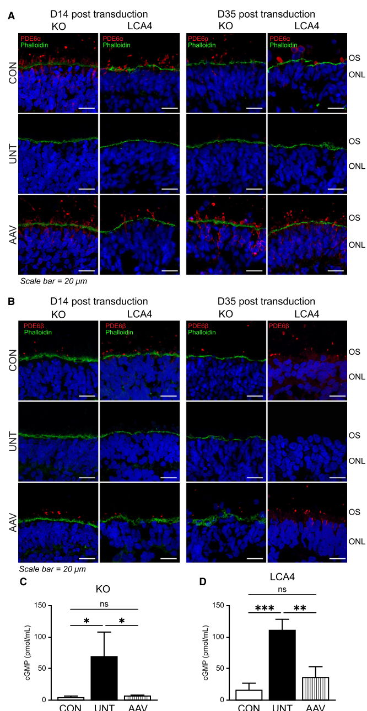

AIPL1 is a retina- and pineal-enriched FKBP-like/TPR-domain co-chaperone required for normal photoreceptor function. Its TPR region binds HSP90, while its FKBP-like domain binds prenyl/farnesyl moieties rather than acting as a peptidyl-prolyl isomerase. AIPL1 works with HSP90 to promote maturation and stable assembly of rod and cone phosphodiesterase 6 (PDE6), the cGMP phosphodiesterase that drives phototransduction. Loss of AIPL1 destabilizes PDE6 and causes severe early-onset retinal degeneration, including Leber congenital amaurosis 4.
| GO Term | Evidence | Action | Reason |
|---|---|---|---|
|
GO:0003755
peptidyl-prolyl cis-trans isomerase activity
|
IEA
GO_REF:0000002 |
REMOVE |
Summary: This InterPro2GO annotation is based on the FKBP-like/PPIase domain in AIPL1. The domain assignment is structurally correct, but the molecular activity is not supported for AIPL1. The AIPL1 FKBP-like domain has diverged into a farnesyl/prenyl-binding module used in PDE6 chaperone biology, and published biochemical work explicitly states that it does not exhibit PPIase activity.
Reason: AIPL1 should not be annotated as a peptidyl-prolyl cis-trans isomerase solely from its FKBP-like domain. Gene-specific evidence indicates lack of FK506 binding and lack of peptidylprolylisomerase activity, so the computational FKBP/PPIase transfer is an overcall.
Supporting Evidence:
PMID:23737531
the FKBP domain of AIPL1 does not bind FK506 or exhibit peptidylprolylisomerase activity
|
|
GO:0005634
nucleus
|
IEA
GO_REF:0000044 |
KEEP AS NON CORE |
Summary: This IEA annotation comes from the UniProtKB subcellular-location vocabulary. UniProtKB records AIPL1 as nuclear and cytoplasmic based on PMID:12374762. The cached abstract does not provide the exact subcellular compartment detail, but it does support AIPL1 expression in developing and adult photoreceptors.
Reason: Retain the UniProt-derived nuclear localization as non-core cellular-location information. AIPL1's core reviewed function is the cytoplasmic/photoreceptor co-chaperone role in PDE6 maturation rather than a nuclear function.
|
|
GO:0005737
cytoplasm
|
IEA
GO_REF:0000044 |
ACCEPT |
Summary: This IEA annotation comes from the UniProtKB subcellular-location vocabulary. Cytoplasmic localization is consistent with AIPL1's role in the HSP90/AIPL1 chaperone pathway for nascent PDE6 and with UniProtKB's PMID:12374762-backed subcellular-location statement.
Reason: Cytoplasmic localization is consistent with the main biochemical function of AIPL1 as an HSP90-associated PDE6 maturation factor.
|
|
GO:0005515
protein binding
|
IPI
PMID:12374762 The inherited blindness associated protein AIPL1 interacts w... |
KEEP AS NON CORE |
Summary: This IPI annotation captures the experimentally verified AIPL1 interaction with NUB1 in Y79 retinoblastoma cells. The interaction is real but not the best representation of AIPL1's core molecular role in photoreceptor PDE6 maturation.
Reason: Retain the verified NUB1 interaction as non-core protein-binding information. The generic GO:0005515 term is uninformative for core function, and the NUB1 interaction is less directly tied to AIPL1's established HSP90/PDE6 co-chaperone function. Later work nonetheless connects this NUB1/FAT10 axis to PDE6 proteostasis (FAT10 conjugates to PDE6 for proteasomal degradation and AIPL1 stabilizes the FAT10 monomer and PDE6-FAT10 conjugate; PMID:32817338), but this remains a proteostasis-modulation interaction rather than AIPL1's core molecular function.
Supporting Evidence:
PMID:12374762
The AIPL1-NUB1 interaction was verified by co-immunoprecipitation studies in Y79 retinoblastoma cells
|
|
GO:0005515
protein binding
|
IPI
PMID:21044950 Genome-wide YFP fluorescence complementation screen identifi... |
MARK AS OVER ANNOTATED |
Summary: This annotation records an AIPL1-TINF2 interaction from a large-scale YFP complementation screen centered on telomere proteins. The study is useful high-throughput interaction evidence, but it does not establish a telomere role or core proteostasis role for AIPL1.
Reason: GO:0005515 is too generic, and this high-throughput telomere-interactome result should not drive the functional interpretation of a retina-specific PDE6 co-chaperone. Keep the source interaction available for specialist review, but do not treat it as core AIPL1 biology.
Supporting Evidence:
PMID:21044950
we identified over 300 proteins that associated with the six core telomeric proteins
|
|
GO:0005515
protein binding
|
IPI
PMID:32296183 A reference map of the human binary protein interactome. |
MARK AS OVER ANNOTATED |
Summary: This annotation represents AIPL1 interactions from the HuRI human binary interactome resource. The publication describes a broad systematic Y2H reference map rather than AIPL1-focused mechanistic work.
Reason: The HuRI interactions are useful interaction-screen evidence, but the generic protein-binding term and lack of AIPL1-specific mechanistic follow-up make this unsuitable as a core annotation for AIPL1.
Supporting Evidence:
PMID:32296183
the cellular function of most individual PPIs remains to be elucidated
|
|
GO:0001917
photoreceptor inner segment
|
IEA
GO_REF:0000107 |
ACCEPT |
Summary: This Ensembl Compara transfer is consistent with AIPL1 expression in developing and adult human photoreceptors and with its role in the biosynthetic maturation of PDE6, which occurs before delivery of PDE6 to the outer segment.
Reason: Accept as a conserved photoreceptor localization annotation. The exact inner segment localization is not the primary molecular function, but it is coherent with AIPL1's photoreceptor-specific PDE6 maturation role.
Supporting Evidence:
PMID:12374762
AIPL1 is present in the developing photoreceptor layer of the human retina and within the photoreceptors of the adult retina
|
|
GO:0001918
farnesylated protein binding
|
IDA
PMID:14555765 AIPL1, a protein implicated in Leber's congenital amaurosis,... |
ACCEPT |
Summary: This annotation is well supported. AIPL1 was identified as specifically interacting with farnesylated proteins, and later biochemical work showed high-affinity binding of a farnesylated-Cys probe to the FKBP-like domain.
Reason: Farnesyl/prenyl binding is a genuine AIPL1 molecular function and explains why the FKBP-like domain should be interpreted as a lipid-binding module rather than as an enzymatic PPIase domain.
Supporting Evidence:
PMID:14555765
AIPL1 interacts specifically with farnesylated proteins
PMID:23737531
farnesylated-Cys binds exclusively to the FKBP domain of AIPL1
|
|
GO:0005634
nucleus
|
IDA
PMID:12374762 The inherited blindness associated protein AIPL1 interacts w... |
KEEP AS NON CORE |
Summary: This experimental localization annotation is based on the AIPL1/NUB1 paper. The cached abstract confirms AIPL1 localization was examined in developing and adult retina but does not include the detailed nucleus/cytoplasm wording.
Reason: Retain as non-core localization information. The review does not identify a nuclear molecular function for AIPL1, and the main curated function is the HSP90/PDE6 co-chaperone role.
|
|
GO:0005737
cytoplasm
|
IDA
PMID:12374762 The inherited blindness associated protein AIPL1 interacts w... |
ACCEPT |
Summary: This experimental localization annotation is consistent with UniProtKB and with AIPL1's HSP90-associated co-chaperone function in PDE6 maturation.
Reason: Cytoplasmic localization is biologically coherent with AIPL1's established role in maturation of nascent PDE6.
|
|
GO:0018343
protein farnesylation
|
IDA
PMID:14555765 AIPL1, a protein implicated in Leber's congenital amaurosis,... |
MODIFY |
Summary: PMID:14555765 showed that AIPL1 interacts with and aids processing of farnesylated proteins, but AIPL1 is not a farnesyltransferase and the evidence does not show that AIPL1 catalyzes farnesyl addition. More recent work places AIPL1 in HSP90-dependent PDE6 maturation, with farnesyl/prenyl binding as a substrate-tethering feature rather than the farnesylation reaction itself.
Reason: The biological process should be represented as protein maturation rather than protein farnesylation. AIPL1 acts on already prenylated/farnesylated PDE6 substrates and promotes maturation/assembly of functional PDE6, but does not perform the lipid modification reaction.
Proposed replacements:
protein maturation
Supporting Evidence:
PMID:14555765
AIPL1 enhances the processing of farnesylated proteins
PMID:35065964
Disruption of the AIPL1 interaction with HSP90 impedes maturation of PDE6
|
|
GO:0005634
nucleus
|
TAS
PMID:10615133 Mutations in a new photoreceptor-pineal gene on 17p cause Le... |
KEEP AS NON CORE |
Summary: The TAS nuclear annotation traces to the gene-discovery paper that identified AIPL1 as a photoreceptor/pineal gene with TPR motifs consistent with nuclear transport or chaperone activity. This is weak as evidence for a core nuclear function.
Reason: Retain only as non-core location-associated information. The strongest current AIPL1 biology is its cytoplasmic HSP90/PDE6 co-chaperone role in photoreceptors.
Supporting Evidence:
PMID:10615133
whose protein contains three tetratricopeptide (TPR) motifs, consistent with nuclear transport or chaperone activity
|
|
GO:0007601
visual perception
|
TAS
PMID:10615133 Mutations in a new photoreceptor-pineal gene on 17p cause Le... |
ACCEPT |
Summary: This annotation is supported by the severe early-onset retinal phenotype caused by AIPL1 mutations and by mechanistic work showing that AIPL1 is required for functional maturation of PDE6, a core phototransduction enzyme.
Reason: AIPL1 is required for photoreceptor function through HSP90-dependent maturation and stability of PDE6, so visual perception is an appropriate biological-process annotation.
Supporting Evidence:
PMID:10615133
AIPL1 mutations may cause approximately 20% of recessive LCA
PMID:35065964
Phosphodiesterase 6 (PDE6) is a key effector enzyme in vertebrate phototransduction
|
|
GO:0051879
Hsp90 protein binding
|
IDA
PMID:35065964 Molecular insights into the maturation of phosphodiesterase ... |
NEW |
Summary: NEW annotation recommended for the PN proteostasis review. AIPL1 has direct, gene-specific HSP90-binding evidence from biochemical assays, and HSP90 binding is required for efficient PDE6 maturation. This is a more precise and better supported representation than the projected broad heat shock protein binding term.
Reason: AIPL1-specific literature supports HSP90 binding directly. The PN projection to GO:0031072 heat shock protein binding is directionally correct, but direct curation should use GO:0051879 Hsp90 protein binding because the strongest primary evidence is for HSP90.
Supporting Evidence:
PMID:35065964
AIPL1 preferentially binds to HSP90 in the closed state with a stoichiometry of 1:2
PMID:28973376
AIPL1 functions as a photoreceptor-specific co-chaperone that interacts with the molecular chaperone HSP90
|
Q: Does direct primary evidence support a separate Hsp70 protein binding annotation for AIPL1, or should current GO curation remain limited to HSP90 binding until gene-specific HSP70 assays are reviewed?
Q: Does AIPL1's stabilization of FAT10 and the PDE6-FAT10 conjugate (PMID:32817338) warrant a distinct biological-process annotation linking AIPL1 to regulation of PDE6 proteasomal turnover, or is it best captured under protein maturation/stability?
Experiment: Compare human AIPL1 TPR-interface mutants and FKBP/prenyl-binding mutants in photoreceptor-relevant PDE6 maturation assays, measuring PDE6 abundance, catalytic activity, and rescue of photoreceptor phenotypes.
Hypothesis: AIPL1-HSP90 binding is the essential proteostasis interaction for PDE6 maturation, whereas farnesyl/prenyl binding modulates substrate handling but is not itself a PPIase activity.
Type: mutational rescue and PDE6 activity assay
The research report should be a detailed narrative explaining the function, biological processes, and localization of the gene product. Citations should be given for all claims.
You should prioritize authoritative reviews and primary scientific literature when conducting research. You can supplement
this with annotations you find in gene/protein databases, but these can be outdated or inaccurate.
We are specifically interested in the primary function of the gene - for enzymes, what reaction is catalyzed, and what is the substrate specificity? For transporters, what is the substrate? For structural proteins or adapters, what is the broader structural role? For signaling molecules, what is the role in the pathway.
We are interested in where in or outside the cell the gene product carries out its function.
We are also interested in the signaling or biochemical pathways in which the gene functions. We are less interested in broad pleiotropic effects, except where these elucidate the precise role.
Include evidence where possible. We are interested in both experimental evidence as well as inference from structure, evolution, or bioinformatic analysis. Precise studies should be prioritized over high-throughput, where available.
The requested target is aryl-hydrocarbon-interacting protein-like 1 (AIPL1) in Homo sapiens, UniProt Q9NZN9. In the retrieved literature, human AIPL1 is consistently described as a 384 amino-acid protein with an N-terminal FKBP-like domain, three TPR repeats, and a primate-specific C-terminal proline-rich domain (PRD), matching the identity and domain context provided in the prompt (and aligning with the stated InterPro-style domain assignments to FKBP/PPIase-like and TPR-like folds). (galieva2025restoringsightthe pages 4-5, galieva2025restoringsightthe pages 5-7)
AIPL1 is not an enzyme or transporter in the classic sense; rather, it is best characterized as a photoreceptor-specific molecular chaperone/co-chaperone that supports the biogenesis, maturation, and stability of the phototransduction effector enzyme phosphodiesterase-6 (PDE6). (galieva2025restoringsightthe pages 12-13, ashok2024updatesonproteinprenylation pages 7-8)
AIPL1 functions as an HSP90-dependent co-chaperone. Mechanistically, the TPR domain is required for HSP90 interaction, and formation of a stable ternary complex containing AIPL1–HSP90–PDE6 is described as crucial for PDE6 maturation. (galieva2025restoringsightthe pages 10-12, galieva2025restoringsightthe pages 12-13)
AIPL1 is also described as preferentially recognizing prenylated proteins: PDE6 catalytic subunits are prenylated (rod PDE6A is typically farnesylated; PDE6B and cone PDE6 are geranylgeranylated), and PDE6 prenylation is required for binding to AIPL1’s FKBP-like domain, which supports a model where AIPL1 acts as a prenyl-dependent assembly factor for PDE6. (ashok2024updatesonproteinprenylation pages 7-8, ashok2024updatesonproteinprenylation pages 6-7)
PDE6 is a pivotal phototransduction enzyme because it hydrolyzes cGMP, and loss of AIPL1 can result in PDE6 loss with consequent cGMP dysregulation, a hallmark of AIPL1-related retinal degeneration models. (galieva2025restoringsightthe pages 13-15, sai2024effectiveaavmediatedgene pages 3-5)
AIPL1 is described as a multi-domain protein containing:
- FKBP-like domain (reported residues ~12–157), with a notable insert region (reported ~90–147)
- Three TPR repeats (TPR1 ~178–213; TPR2 ~219–260; TPR3 ~264–297)
- C-terminal proline-rich domain (PRD) (reported ~328–384), described as primate-specific in reviewed sources
These assignments support the prompt’s “AIP/AIPL1/TTC9”, “PPIase-like”, and “TPR-repeat/helical” domain context. (galieva2025restoringsightthe pages 4-5, galieva2025restoringsightthe pages 5-7)
AIPL1 is reported to interact with HSP90 (and HSP70), with the TPR domain necessary for HSP90 binding. Truncation removing TPR/PRD abolishes HSP90 interaction in the reviewed mechanistic summary, emphasizing domain integrity for co-chaperone action. (galieva2025restoringsightthe pages 10-12, galieva2025restoringsightthe pages 12-13)
AIPL1 is also linked to a proteostasis axis involving FAT10 (a ubiquitin-like modifier) and NUB1:
- In a primary biochemical study, FAT10 is shown to covalently conjugate to PDE6 subunits (FAT10ylation) and target PDE6 toward proteasomal degradation, while also non-covalently binding PDE6 domains to inhibit cGMP hydrolysis. (boehm2020theubiquitinlikemodifier pages 1-2, boehm2020theubiquitinlikemodifier pages 5-6)
- The same work reports that AIPL1 stabilizes FAT10 and the PDE6β–FAT10 conjugate, and FAT10 binds AIPL1’s TPR motifs, supporting a model where AIPL1 can modulate PDE6’s stability under inflammatory/proteotoxic conditions. (boehm2020theubiquitinlikemodifier pages 5-6, boehm2020theubiquitinlikemodifier pages 3-4)
Quantitatively, Boehm et al. report that roughly ~50% of the PDE6β–FAT10 conjugate was degraded after 2.5 hours of cycloheximide chase, consistent with rapid turnover of FAT10ylated PDE6 species. (boehm2020theubiquitinlikemodifier pages 7-8)
AIPL1 is consistently characterized as retina/photoreceptor-specific (with retina-enriched patterns across sources), supporting its specialized role in phototransduction protein biogenesis. (galieva2025restoringsightthe pages 5-7, ashok2024updatesonproteinprenylation pages 7-8)
AIPL1 shows a developmental expression pattern in which it can be observed in both rod and developing cone contexts, but adult human retina immunofluorescence emphasizes strong detection in rods with reduced or minimal detection in adult cones. Despite this, AIPL1 is described as important for cone photoreceptor viability/function. (galieva2025restoringsightthe pages 40-42, galieva2025restoringsightthe pages 4-5)
AIPL1 is discussed as localizing along the synapse to inner segment/connecting cilium axis, supporting the interpretation that its primary role is PDE6 maturation/assembly rather than being the principal carrier for outer-segment trafficking. (ashok2024updatesonproteinprenylation pages 7-8)
A 2024 review on retinal prenylation and retinopathies highlights AIPL1 as a photoreceptor-specific co-chaperone essential for PDE6 maturation and stabilization, with PDE6 prenylation required for binding to AIPL1’s FKBP domain, while AIPL1’s TPR domain binds HSP90 and engages co-chaperone-dependent maturation logic. (Publication date: July 2024; URL: https://doi.org/10.3389/fopht.2024.1410874) (ashok2024updatesonproteinprenylation pages 7-8)
The same review stresses that AIPL1 localization patterns (synapse → inner segment/connecting cilium) favor a model in which AIPL1 is primarily a maturation factor, and notes remaining uncertainty about handoff of mature PDE6 to trafficking chaperones (e.g., PrBP/δ), which is a current open mechanistic point. (ashok2024updatesonproteinprenylation pages 7-8, ashok2024updatesonproteinprenylation pages 12-13)
A key 2024 translational study used human iPSC-derived retinal organoids (AIPL1 knockout and patient-derived LCA4 models) and delivered AAV7m8.hRKp.AIPL1 (photoreceptor-directed transgene expression) to test gene replacement. (Publication date: March 2024; URL: https://doi.org/10.1016/j.omtn.2024.102148) (sai2024effectiveaavmediatedgene pages 1-2, sai2024effectiveaavmediatedgene pages 2-3)
Major findings:
- AIPL1 protein became detectable in rods and cones after treatment and persisted across measured timepoints. Quantitatively, AIPL1 was detected in approximately ~10.9–12.1% of rhodopsin-positive rods and ~12.8–13.4% of cone-arrestin-positive cones (KO model), with similar magnitudes reported in the patient line (up to ~15.4% of rods and ~14.3% of cones at later measured timepoints). (sai2024effectiveaavmediatedgene pages 1-2)
- Rod PDE6 subunits (PDE6α/β), reduced or absent in untreated disease organoids, showed recovery after AAV transduction, while PDE6 transcripts were not notably changed—supporting a post-transcriptional, proteostasis/assembly rescue mechanism consistent with AIPL1’s chaperone role. (sai2024effectiveaavmediatedgene pages 2-3)
- cGMP, elevated in AIPL1-deficient organoids, was reduced to control-like levels after AAV treatment. Reported statistics include elevated cGMP in KO and patient models (e.g., p = 0.0285 and p = 0.007, respectively; patient vs isogenic control p = 0.0056) and normalization after treatment. (sai2024effectiveaavmediatedgene pages 3-5)
Visual evidence for these rescue outcomes is provided in the organoid study figures (immunostaining rescue and cGMP ELISA plots). (sai2024effectiveaavmediatedgene media 9aa37a09)
A 2024 cohort of 52 children with Leber congenital amaurosis (LCA) reported that AIPL1 variants occurred in 4/52 (7.7%) of patients; an AIPL1 variant c.421C>T (p.Q141X) was recurrently observed in four non-consanguineous patients in the cohort. (Publication date: April 2024; URL: https://doi.org/10.1007/s00417-024-06450-9) (zhou2024clinicalandgenetic pages 4-6, zhou2024clinicalandgenetic pages 6-8)
This study also provides objective vascular/hemodynamic statistics that may reflect degenerative severity in LCA generally: mean retinal artery diameter 43.6 ± 3.8 μm in patients vs 51.7 ± 2.6 μm in controls (P < 0.001), and reduced ophthalmic artery PSV 16.3 ± 5.4 cm/s vs 23.5 ± 6.4 cm/s (P = 0.0132). (zhou2024clinicalandgenetic pages 4-6)
The strongest near-term application is gene augmentation (AAV-mediated AIPL1 replacement) to restore PDE6 maturation and normalize downstream signaling (cGMP), supported by human organoid evidence. (sai2024effectiveaavmediatedgene pages 3-5, sai2024effectiveaavmediatedgene pages 2-3)
Clinical translation is reflected by an active ClinicalTrials.gov record:
- NCT07063030 — “A Study of LX107 Gene Therapy in AIPL1-IRD Patients” (first posted 2025-07-14, actual start 2025-07-15; Recruiting status verified 2026-03). (NCT07063030 chunk 1)
- Design: Early Phase 1, single-group, open-label; single subretinal injection on Day 0; estimated enrollment 13.
- Dose cohorts: 1×10¹⁰ VG/eye (medium) and 3×10¹⁰ VG/eye (high) are explicitly stated, with a low cohort also reported; primary endpoint is safety/tolerability by adverse events over 6 months. (NCT07063030 chunk 1)
URL: https://clinicaltrials.gov/study/NCT07063030 (trial details consistent with the cited record). (NCT07063030 chunk 1)
Two convergent expert-level analyses emerge from the 2024 and mechanistic syntheses:
1) AIPL1 is best understood as a specialized, HSP90-dependent co-chaperone whose primary client is PDE6, and disease arises largely from failure of PDE6 maturation/stability with downstream cGMP dysregulation and photoreceptor loss. (ashok2024updatesonproteinprenylation pages 7-8, galieva2025restoringsightthe pages 13-15)
2) There is an increasingly explicit prenylation-centric model: PDE6 prenylation is not only a membrane-anchor but also a molecular recognition element enabling AIPL1 binding and stable chaperone complex formation; this framing suggests that therapeutic strategies may need to consider prenylation-dependent assembly steps and broader prenylation/proteostasis networks (PrBP/δ, RCE1 processing, etc.). (ashok2024updatesonproteinprenylation pages 7-8, ashok2024updatesonproteinprenylation pages 6-7)
| Aspect | Key mechanistic/biological fact for human AIPL1 (UniProt Q9NZN9) | Best supporting citation IDs |
|---|---|---|
| Verified identity | AIPL1 is the human aryl-hydrocarbon-interacting protein-like 1, a 384-aa retina-enriched photoreceptor protein with FKBP-like, TPR, and C-terminal proline-rich features consistent with UniProt Q9NZN9. | (galieva2025restoringsightthe pages 4-5, galieva2025restoringsightthe pages 5-7) |
| Domain architecture | Domain organization comprises an N-terminal FKBP-like domain, an insert region within/adjacent to the FKBP-like module, three TPR repeats, and a primate-specific C-terminal proline-rich domain (PRD). Reported residue mapping includes FKBP 12–157, TPR1 178–213, TPR2 219–260, TPR3 264–297, PRD 328–384. | (galieva2025restoringsightthe pages 4-5, galieva2025restoringsightthe pages 5-7) |
| HSP90 interaction | The TPR domain is required for HSP90 binding, while FKBP-like domain features contribute to the HSP90-associated co-chaperone interface; AIPL1 preferentially binds the closed ATP-bound HSP90 dimer and forms an HSP90-dependent complex needed for PDE6 maturation. | (galieva2025restoringsightthe pages 10-12, galieva2025restoringsightthe pages 12-13) |
| PDE6 client relationship | AIPL1 is an obligate/specialized photoreceptor co-chaperone for rod and cone PDE6, promoting PDE6 folding, holoenzyme assembly, maturation, and stability before delivery to outer segments. Loss of AIPL1 causes rapid PDE6 loss and downstream cGMP dysregulation. | (galieva2025restoringsightthe pages 12-13, ashok2024updatesonproteinprenylation pages 7-8, galieva2025restoringsightthe pages 13-15) |
| Prenyl/farnesyl recognition | AIPL1 preferentially binds prenylated PDE6 subunits through its FKBP-like domain; PDE6 prenylation is required for productive AIPL1 binding, especially the farnesylated PDE6A subunit, and is important for stable AIPL1–HSP90–PDE6 ternary complex formation. | (galieva2025restoringsightthe pages 5-7, ashok2024updatesonproteinprenylation pages 7-8, ashok2024updatesonproteinprenylation pages 6-7) |
| Major binding partners | Best-supported interactors include HSP90/HSP70, PDE6 catalytic and regulatory subunits, FAT10, and NUB1. FAT10 binds AIPL1 TPR motifs; NUB1 binds within residues ~181–330; these interactions connect AIPL1 to PDE6 proteostasis. | (galieva2025restoringsightthe pages 10-12, galieva2025restoringsightthe pages 12-13, boehm2020theubiquitinlikemodifier pages 3-4) |
| FAT10/NUB1 proteostasis axis | Beyond PDE6 maturation, AIPL1 stabilizes FAT10 and PDE6β–FAT10 conjugates and is proposed to oppose NUB1/FAT10-linked proteasomal loss of PDE6. FAT10 both inhibits PDE6 cGMP hydrolysis non-covalently and targets FAT10ylated PDE6 for proteasomal degradation. | (boehm2020theubiquitinlikemodifier pages 7-8, boehm2020theubiquitinlikemodifier pages 1-2, boehm2020theubiquitinlikemodifier pages 5-6) |
| Subcellular localization | Evidence places AIPL1 mainly in photoreceptor inner segments and connecting cilium/ciliary region, supporting a principal role in PDE6 maturation rather than direct outer-segment trafficking. Adult human retina data show strongest expression in rods, with developmental expression in both rods and cones. | (galieva2025restoringsightthe pages 40-42, galieva2025restoringsightthe pages 4-5, ashok2024updatesonproteinprenylation pages 7-8) |
| Rods versus cones | In adult human retina, immunofluorescence detects AIPL1 mainly in rods, whereas developmental studies and organoid/transcript data indicate expression in both rods and developing cones, later reduced in mature cones. AIPL1 is nevertheless important for cone viability/function. | (galieva2025restoringsightthe pages 40-42, galieva2025restoringsightthe pages 4-5) |
| Primary biological role | AIPL1 is not an enzyme or transporter; its primary role is a photoreceptor-specific HSP90-dependent co-chaperone/adaptor that recognizes prenylated PDE6 and enables correct folding, assembly, and maintenance of the visual effector phosphodiesterase required for phototransduction. | (galieva2025restoringsightthe pages 10-12, ashok2024updatesonproteinprenylation pages 7-8, galieva2025restoringsightthe pages 1-2) |
| Disease association | Biallelic loss-of-function AIPL1 variants cause autosomal recessive LCA4/early-onset severe retinal dystrophy, typically with severe infantile visual impairment and rapid rod-cone degeneration. Reviews cite AIPL1 among the more severe LCA genes, with genotype–severity variation. | (ashok2024updatesonproteinprenylation pages 7-8, galieva2025restoringsightthe pages 13-15) |
| Recent cohort statistics | In a 2024 cohort of 52 children with LCA, AIPL1 variants were identified in 4/52 patients (7.7%); recurrent AIPL1 c.421C>T (p.Q141X) was observed in four non-consanguineous patients. The AIPL1 subgroup had mean age 2.8 ± 1.7 years and onset 5.5 ± 2.1 months. | (zhou2024clinicalandgenetic pages 4-6, zhou2024clinicalandgenetic pages 6-8) |
| Preclinical gene therapy | In 2024 human iPSC-derived retinal organoids modeling AIPL1-LCA4, AAV7m8.hRKp.AIPL1 restored AIPL1 expression, rescued rod PDE6, and normalized elevated cGMP. Rescue was detectable by 14 days and sustained up to 70 days in reported experiments. | (sai2024effectiveaavmediatedgene pages 5-8, sai2024effectiveaavmediatedgene pages 3-5, sai2024effectiveaavmediatedgene pages 1-2) |
| Quantitative organoid rescue notes | After AAV treatment, AIPL1-positive cells were detected in a minority of rods/cones (roughly ~11–15% of marker-positive photoreceptors depending on model/time point), yet this was sufficient to rescue PDE6 and reduce cGMP to control-like levels in organoids. | (sai2024effectiveaavmediatedgene pages 1-2, sai2024effectiveaavmediatedgene pages 2-3) |
| Clinical translation | A clinical study is underway for AIPL1-IRD: NCT07063030 (“A Study of LX107 Gene Therapy in AIPL1-IRD Patients”), an early phase 1, recruiting, single-group trial in Shanghai testing single subretinal LX107 administration in patients with biallelic AIPL1 mutations; primary endpoint is safety over 6 months. | (NCT07063030 chunk 1) |
Table: This table condenses the most important mechanistic, localization, disease, and therapeutic facts about human AIPL1, with direct context-ID citations for each point. It is useful as a quick-reference evidence map linking AIPL1 biology to PDE6 maturation and current translational work.
References
(galieva2025restoringsightthe pages 4-5): Alima Galieva, Alexander Karabelsky, and Alexander D. Egorov. Restoring sight: the journey of aipl1 from discovery to therapy. International Journal of Molecular Sciences, 26:12066, Dec 2025. URL: https://doi.org/10.3390/ijms262412066, doi:10.3390/ijms262412066. This article has 1 citations.
(galieva2025restoringsightthe pages 5-7): Alima Galieva, Alexander Karabelsky, and Alexander D. Egorov. Restoring sight: the journey of aipl1 from discovery to therapy. International Journal of Molecular Sciences, 26:12066, Dec 2025. URL: https://doi.org/10.3390/ijms262412066, doi:10.3390/ijms262412066. This article has 1 citations.
(galieva2025restoringsightthe pages 12-13): Alima Galieva, Alexander Karabelsky, and Alexander D. Egorov. Restoring sight: the journey of aipl1 from discovery to therapy. International Journal of Molecular Sciences, 26:12066, Dec 2025. URL: https://doi.org/10.3390/ijms262412066, doi:10.3390/ijms262412066. This article has 1 citations.
(ashok2024updatesonproteinprenylation pages 7-8): Sudhat Ashok and Sriganesh Ramachandra Rao. Updates on protein-prenylation and associated inherited retinopathies. Frontiers in Ophthalmology, Jul 2024. URL: https://doi.org/10.3389/fopht.2024.1410874, doi:10.3389/fopht.2024.1410874. This article has 7 citations.
(galieva2025restoringsightthe pages 10-12): Alima Galieva, Alexander Karabelsky, and Alexander D. Egorov. Restoring sight: the journey of aipl1 from discovery to therapy. International Journal of Molecular Sciences, 26:12066, Dec 2025. URL: https://doi.org/10.3390/ijms262412066, doi:10.3390/ijms262412066. This article has 1 citations.
(ashok2024updatesonproteinprenylation pages 6-7): Sudhat Ashok and Sriganesh Ramachandra Rao. Updates on protein-prenylation and associated inherited retinopathies. Frontiers in Ophthalmology, Jul 2024. URL: https://doi.org/10.3389/fopht.2024.1410874, doi:10.3389/fopht.2024.1410874. This article has 7 citations.
(galieva2025restoringsightthe pages 13-15): Alima Galieva, Alexander Karabelsky, and Alexander D. Egorov. Restoring sight: the journey of aipl1 from discovery to therapy. International Journal of Molecular Sciences, 26:12066, Dec 2025. URL: https://doi.org/10.3390/ijms262412066, doi:10.3390/ijms262412066. This article has 1 citations.
(sai2024effectiveaavmediatedgene pages 3-5): Hali Sai, Bethany Ollington, Farah O. Rezek, Niuzheng Chai, Amelia Lane, Anastasios Georgiadis, James Bainbridge, Michel Michaelides, Almudena Sacristan-Reviriego, Pedro R.L. Perdigão, Amy Leung, and Jacqueline van der Spuy. Effective aav-mediated gene replacement therapy in retinal organoids modeling aipl1-associated lca4. Molecular Therapy - Nucleic Acids, 35:102148, Mar 2024. URL: https://doi.org/10.1016/j.omtn.2024.102148, doi:10.1016/j.omtn.2024.102148. This article has 25 citations.
(boehm2020theubiquitinlikemodifier pages 1-2): Annika N. Boehm, Johanna Bialas, Nicola Catone, Almudena Sacristan-Reviriego, Jacqueline van der Spuy, Marcus Groettrup, and Annette Aichem. The ubiquitin-like modifier fat10 inhibits retinal pde6 activity and mediates its proteasomal degradation. Journal of Biological Chemistry, 295:14402-14418, Oct 2020. URL: https://doi.org/10.1074/jbc.ra120.013873, doi:10.1074/jbc.ra120.013873. This article has 12 citations and is from a domain leading peer-reviewed journal.
(boehm2020theubiquitinlikemodifier pages 5-6): Annika N. Boehm, Johanna Bialas, Nicola Catone, Almudena Sacristan-Reviriego, Jacqueline van der Spuy, Marcus Groettrup, and Annette Aichem. The ubiquitin-like modifier fat10 inhibits retinal pde6 activity and mediates its proteasomal degradation. Journal of Biological Chemistry, 295:14402-14418, Oct 2020. URL: https://doi.org/10.1074/jbc.ra120.013873, doi:10.1074/jbc.ra120.013873. This article has 12 citations and is from a domain leading peer-reviewed journal.
(boehm2020theubiquitinlikemodifier pages 3-4): Annika N. Boehm, Johanna Bialas, Nicola Catone, Almudena Sacristan-Reviriego, Jacqueline van der Spuy, Marcus Groettrup, and Annette Aichem. The ubiquitin-like modifier fat10 inhibits retinal pde6 activity and mediates its proteasomal degradation. Journal of Biological Chemistry, 295:14402-14418, Oct 2020. URL: https://doi.org/10.1074/jbc.ra120.013873, doi:10.1074/jbc.ra120.013873. This article has 12 citations and is from a domain leading peer-reviewed journal.
(boehm2020theubiquitinlikemodifier pages 7-8): Annika N. Boehm, Johanna Bialas, Nicola Catone, Almudena Sacristan-Reviriego, Jacqueline van der Spuy, Marcus Groettrup, and Annette Aichem. The ubiquitin-like modifier fat10 inhibits retinal pde6 activity and mediates its proteasomal degradation. Journal of Biological Chemistry, 295:14402-14418, Oct 2020. URL: https://doi.org/10.1074/jbc.ra120.013873, doi:10.1074/jbc.ra120.013873. This article has 12 citations and is from a domain leading peer-reviewed journal.
(galieva2025restoringsightthe pages 40-42): Alima Galieva, Alexander Karabelsky, and Alexander D. Egorov. Restoring sight: the journey of aipl1 from discovery to therapy. International Journal of Molecular Sciences, 26:12066, Dec 2025. URL: https://doi.org/10.3390/ijms262412066, doi:10.3390/ijms262412066. This article has 1 citations.
(ashok2024updatesonproteinprenylation pages 12-13): Sudhat Ashok and Sriganesh Ramachandra Rao. Updates on protein-prenylation and associated inherited retinopathies. Frontiers in Ophthalmology, Jul 2024. URL: https://doi.org/10.3389/fopht.2024.1410874, doi:10.3389/fopht.2024.1410874. This article has 7 citations.
(sai2024effectiveaavmediatedgene pages 1-2): Hali Sai, Bethany Ollington, Farah O. Rezek, Niuzheng Chai, Amelia Lane, Anastasios Georgiadis, James Bainbridge, Michel Michaelides, Almudena Sacristan-Reviriego, Pedro R.L. Perdigão, Amy Leung, and Jacqueline van der Spuy. Effective aav-mediated gene replacement therapy in retinal organoids modeling aipl1-associated lca4. Molecular Therapy - Nucleic Acids, 35:102148, Mar 2024. URL: https://doi.org/10.1016/j.omtn.2024.102148, doi:10.1016/j.omtn.2024.102148. This article has 25 citations.
(sai2024effectiveaavmediatedgene pages 2-3): Hali Sai, Bethany Ollington, Farah O. Rezek, Niuzheng Chai, Amelia Lane, Anastasios Georgiadis, James Bainbridge, Michel Michaelides, Almudena Sacristan-Reviriego, Pedro R.L. Perdigão, Amy Leung, and Jacqueline van der Spuy. Effective aav-mediated gene replacement therapy in retinal organoids modeling aipl1-associated lca4. Molecular Therapy - Nucleic Acids, 35:102148, Mar 2024. URL: https://doi.org/10.1016/j.omtn.2024.102148, doi:10.1016/j.omtn.2024.102148. This article has 25 citations.
(sai2024effectiveaavmediatedgene media 9aa37a09): Hali Sai, Bethany Ollington, Farah O. Rezek, Niuzheng Chai, Amelia Lane, Anastasios Georgiadis, James Bainbridge, Michel Michaelides, Almudena Sacristan-Reviriego, Pedro R.L. Perdigão, Amy Leung, and Jacqueline van der Spuy. Effective aav-mediated gene replacement therapy in retinal organoids modeling aipl1-associated lca4. Molecular Therapy - Nucleic Acids, 35:102148, Mar 2024. URL: https://doi.org/10.1016/j.omtn.2024.102148, doi:10.1016/j.omtn.2024.102148. This article has 25 citations.
(zhou2024clinicalandgenetic pages 4-6): Yunyu Zhou, Lijuan Huang, Yan Xie, Wen Liu, Shasha Zhang, Lili Liu, Ping Lin, and Ningdong Li. Clinical and genetic studies for a cohort of patients with leber congenital amaurosis. Graefe's Archive for Clinical and Experimental Ophthalmology, 262:3029-3038, Apr 2024. URL: https://doi.org/10.1007/s00417-024-06450-9, doi:10.1007/s00417-024-06450-9. This article has 3 citations.
(zhou2024clinicalandgenetic pages 6-8): Yunyu Zhou, Lijuan Huang, Yan Xie, Wen Liu, Shasha Zhang, Lili Liu, Ping Lin, and Ningdong Li. Clinical and genetic studies for a cohort of patients with leber congenital amaurosis. Graefe's Archive for Clinical and Experimental Ophthalmology, 262:3029-3038, Apr 2024. URL: https://doi.org/10.1007/s00417-024-06450-9, doi:10.1007/s00417-024-06450-9. This article has 3 citations.
(NCT07063030 chunk 1): Xiaodong Sun. A Study of LX107 Gene Therapy in AIPL1-IRD Patients. Shanghai General Hospital, Shanghai Jiao Tong University School of Medicine. 2025. ClinicalTrials.gov Identifier: NCT07063030
(galieva2025restoringsightthe pages 1-2): Alima Galieva, Alexander Karabelsky, and Alexander D. Egorov. Restoring sight: the journey of aipl1 from discovery to therapy. International Journal of Molecular Sciences, 26:12066, Dec 2025. URL: https://doi.org/10.3390/ijms262412066, doi:10.3390/ijms262412066. This article has 1 citations.
(sai2024effectiveaavmediatedgene pages 5-8): Hali Sai, Bethany Ollington, Farah O. Rezek, Niuzheng Chai, Amelia Lane, Anastasios Georgiadis, James Bainbridge, Michel Michaelides, Almudena Sacristan-Reviriego, Pedro R.L. Perdigão, Amy Leung, and Jacqueline van der Spuy. Effective aav-mediated gene replacement therapy in retinal organoids modeling aipl1-associated lca4. Molecular Therapy - Nucleic Acids, 35:102148, Mar 2024. URL: https://doi.org/10.1016/j.omtn.2024.102148, doi:10.1016/j.omtn.2024.102148. This article has 25 citations.

Deep research status: just deep-research-falcon human AIPL1 --fallback perplexity-lite was attempted. Falcon timed out after 600 seconds, then the Perplexity-lite fallback failed with a quota/401 error. No provider-generated deep-research file was created, so this review proceeds from cached GOA, UniProt, PN projection files, and cached primary literature.
PN projection context: projects/PROTEOSTASIS/reports/pn_projection/pn_projected_annotations.tsv projects AIPL1 to GO:0031072 heat shock protein binding via the HSP70-HSP90 joint cochaperone class, and also shows GO:0003755 peptidyl-prolyl cis-trans isomerase activity as already in GOA through the FKBP-type PPIase branch. The review accepts the direction of the HSP90/co-chaperone projection but recommends the narrower, gene-supported GO:0051879 Hsp90 protein binding rather than the broad GO:0031072. The PPIase annotation is removed because AIPL1-specific evidence contradicts catalytic PPIase activity.
AIPL1 is a photoreceptor/pineal protein with TPR motifs. The original gene paper describes "a new photoreceptor/pineal-expressed gene, AIPL1" and says its protein has "three tetratricopeptide (TPR) motifs" [PMID:10615133 "photoreceptor/pineal-expressed gene, AIPL1" / "three tetratricopeptide (TPR) motifs"].
AIPL1 is present in human photoreceptors and interacts with NUB1, but this NUB1 binding is not the core PN proteostasis function. Akey et al. verified the interaction by co-immunoprecipitation and found AIPL1 in developing and adult photoreceptors [PMID:12374762 "The AIPL1-NUB1 interaction was verified by co-immunoprecipitation studies in Y79 retinoblastoma cells" / "AIPL1 is present in the developing photoreceptor layer of the human retina and within the photoreceptors of the adult retina"].
Farnesyl/prenyl binding is a real AIPL1 function. Ramamurthy et al. showed that "AIPL1 interacts specifically with farnesylated proteins" and "AIPL1 enhances the processing of farnesylated proteins" PMID:14555765. Majumder et al. later mapped this to the FKBP-like domain, stating that "farnesylated-Cys binds exclusively to the FKBP domain of AIPL1" PMID:23737531.
Keep farnesyl/prenyl binding separate from the HSP90-dependent PDE6 maturation core function. Yadav et al. show that prenyl-binding-deficient AIPL1 retains co-chaperone activity and conclude that prenyl modification sequestration is not required for PDE6 maturation PMID:35065964.
The FKBP-like domain should not be curated as PPIase activity. Majumder et al. state that "the FKBP domain of AIPL1 does not bind FK506 or exhibit peptidylprolylisomerase activity" PMID:23737531. This directly argues against retaining the InterPro/PN PPIase transfer.
The strongest PN-relevant function is AIPL1-HSP90 co-chaperone activity for PDE6 maturation. Yadav et al. report that AIPL1 "preferentially binds to HSP90 in the closed state with a stoichiometry of 1:2" and that "Disruption of the AIPL1 interaction with HSP90 impedes maturation of PDE6" PMID:35065964. Sacristan-Reviriego et al. also describe AIPL1 as a "photoreceptor-specific co-chaperone that interacts with the molecular chaperone HSP90" PMID:28973376.
High-throughput generic protein-binding rows should not drive core function. The TINF2 row comes from a telomere interactome screen over about 12,000 proteins PMID:21044950. The HuRI rows come from a genome-scale binary interactome resource whose paper notes that "the cellular function of most individual PPIs remains to be elucidated" PMID:32296183. These are useful interaction-screen records but not evidence for a core AIPL1 PN role.
The Falcon (Edison Scientific) report largely confirms the existing PDE6 co-chaperone-centric review. Key NEW items vs the existing review:
FAT10/NUB1 proteostasis axis (genuinely new mechanistic primary study, not previously cited). Boehm et al. show that FAT10 (a cytokine-inducible ubiquitin-like modifier) is conjugated to rod PDE6 and targets it for proteasomal degradation, while also non-covalently inhibiting PDE6 cGMP hydrolysis; AIPL1 stabilizes the FAT10 monomer and the PDE6-FAT10 conjugate, and FAT10 binds AIPL1 TPR motifs [PMID:32817338 "AIPL1 interacts with the cytokine-inducible ubiquitin-like modifier FAT10" / "We found that AIPL1 stabilizes the FAT10 monomer and the PDE6-FAT10 conjugate" (doi:10.1074/jbc.RA120.013873)]. This gives mechanistic meaning to the existing (otherwise generic) AIPL1-NUB1 protein-binding annotation, connecting AIPL1 to inflammation-linked PDE6 proteostasis. I did NOT change any annotation action on this basis since it does not contradict existing calls; added as a reference and a suggested question.
Prenylation as a molecular-recognition element (prenyl-dependent assembly model). The 2024 prenylation review frames PDE6 prenylation not merely as a membrane anchor but as a recognition feature that enables AIPL1 FKBP-domain binding and stable AIPL1-HSP90-PDE6 ternary complex formation; rod PDE6A is farnesylated, PDE6B/cone PDE6 geranylgeranylated [Ashok & Rao 2024, doi:10.3389/fopht.2024.1410874, review]. Consistent with the existing review; note the existing review (citing PMID:35065964) holds that prenyl sequestration is NOT strictly required for PDE6 maturation, so this remains an open mechanistic point. Review-level, not used to change annotations.
2024 human iPSC retinal-organoid gene-replacement study (new primary translational evidence). AAV-mediated AIPL1 replacement rescued loss of rod PDE6 and normalized elevated cGMP in AIPL1-KO and patient LCA4 organoids, with PDE6 transcripts unchanged - i.e. a post-transcriptional/proteostasis rescue, independently supporting AIPL1's chaperone (not transcriptional) mechanism [PMID:38439910 "the loss of retinal phosphodiesterase 6 was rescued and elevated cyclic guanosine monophosphate (cGMP) levels were reduced following treatment" (doi:10.1016/j.omtn.2024.102148)]. Reinforces visual perception / protein maturation annotations; added as reference.
Localization refinement (review-level, low weight). AIPL1 is placed mainly along the synapse-to-inner-segment/connecting-cilium axis, favoring a PDE6 maturation/assembly role rather than direct outer-segment trafficking; adult human retina shows strongest detection in rods with developmental expression also in cones, yet AIPL1 remains important for cone viability [galieva2025 / ashok2024, reviews]. Coherent with existing GO:0001917 photoreceptor inner segment ACCEPT; no change.
Clinical/translational context (not annotation-relevant). 2024 LCA cohort: AIPL1 variants in 4/52 (7.7%) children, recurrent c.421C>T p.Q141X [Zhou et al. 2024, doi:10.1007/s00417-024-06450-9]; active early-phase trial NCT07063030 (LX107 subretinal gene therapy for AIPL1-IRD). Background only; not used for GO annotations.
Recent review: Galieva, Karabelsky & Egorov 2025, "Restoring Sight: The Journey of AIPL1 from Discovery to Therapy" [PMID:41465493, doi:10.3390/ijms262412066] - synthesizes AIPL1 as a unique FKBP-family member essential for PDE6, useful secondary reference.
PMIDs confirmed via PubMed ID conversion (DOI->PMID): Boehm 2020 = PMID:32817338; Sai 2024 = PMID:38439910; Galieva 2025 = PMID:41465493; Ashok 2024 = PMID:39026984; Zhou 2024 = PMID:38662103.
Cytonuclear proteostasis|Chaperone|HSP70-HSP90 system integration|HSP70-HSP90 joint cochaperone|CC-TPR and PPIase domain containing and Cytonuclear proteostasis|Folding enzyme|Peptidyl-prolyl isomerases|FKBP type ; PN-node mapping: joint-cochaperone type mapped→GO:0031072 (heat shock protein binding, propagate); PPIase group/type mapped→GO:0003755 (PPIase activity, propagate; already_in_goa); subtype (mixed TPR/PPIase) no_mapping.This file is generated from the current PROTEOSTASIS phase-1 dossier and local gene-review artifacts. Edit the source review, PN mapping, or dossier rather than this generated note when correcting the underlying curation.
id: Q9NZN9
gene_symbol: AIPL1
product_type: PROTEIN
status: COMPLETE
taxon:
id: NCBITaxon:9606
label: Homo sapiens
description: >-
AIPL1 is a retina- and pineal-enriched FKBP-like/TPR-domain co-chaperone required
for normal photoreceptor function. Its TPR region binds HSP90, while its FKBP-like
domain binds prenyl/farnesyl moieties rather than acting as a peptidyl-prolyl
isomerase. AIPL1 works with HSP90 to promote maturation and stable assembly of
rod and cone phosphodiesterase 6 (PDE6), the cGMP phosphodiesterase that drives
phototransduction. Loss of AIPL1 destabilizes PDE6 and causes severe early-onset
retinal degeneration, including Leber congenital amaurosis 4.
alternative_products:
- name: '1'
id: Q9NZN9-1
- name: '2'
id: Q9NZN9-2
sequence_note: VSP_041507
- name: 3 (AIPL2)
id: Q9NZN9-3
sequence_note: VSP_041508
- name: '4'
id: Q9NZN9-4
sequence_note: VSP_047708
- name: '5'
id: Q9NZN9-5
sequence_note: VSP_047709
existing_annotations:
- term:
id: GO:0003755
label: peptidyl-prolyl cis-trans isomerase activity
evidence_type: IEA
original_reference_id: GO_REF:0000002
qualifier: enables
review:
summary: >-
This InterPro2GO annotation is based on the FKBP-like/PPIase domain in AIPL1.
The domain assignment is structurally correct, but the molecular activity is
not supported for AIPL1. The AIPL1 FKBP-like domain has diverged into a
farnesyl/prenyl-binding module used in PDE6 chaperone biology, and published
biochemical work explicitly states that it does not exhibit PPIase activity.
action: REMOVE
reason: >-
AIPL1 should not be annotated as a peptidyl-prolyl cis-trans isomerase solely
from its FKBP-like domain. Gene-specific evidence indicates lack of FK506
binding and lack of peptidylprolylisomerase activity, so the computational
FKBP/PPIase transfer is an overcall.
additional_reference_ids:
- PMID:23737531
supported_by:
- reference_id: PMID:23737531
supporting_text: the FKBP domain of AIPL1 does not bind FK506 or exhibit peptidylprolylisomerase activity
reference_section_type: DISCUSSION
- term:
id: GO:0005634
label: nucleus
evidence_type: IEA
original_reference_id: GO_REF:0000044
qualifier: located_in
review:
summary: >-
This IEA annotation comes from the UniProtKB subcellular-location vocabulary.
UniProtKB records AIPL1 as nuclear and cytoplasmic based on PMID:12374762.
The cached abstract does not provide the exact subcellular compartment detail,
but it does support AIPL1 expression in developing and adult photoreceptors.
action: KEEP_AS_NON_CORE
reason: >-
Retain the UniProt-derived nuclear localization as non-core cellular-location
information. AIPL1's core reviewed function is the cytoplasmic/photoreceptor
co-chaperone role in PDE6 maturation rather than a nuclear function.
additional_reference_ids:
- PMID:12374762
- file:human/AIPL1/AIPL1-uniprot.txt
- term:
id: GO:0005737
label: cytoplasm
evidence_type: IEA
original_reference_id: GO_REF:0000044
qualifier: located_in
review:
summary: >-
This IEA annotation comes from the UniProtKB subcellular-location vocabulary.
Cytoplasmic localization is consistent with AIPL1's role in the HSP90/AIPL1
chaperone pathway for nascent PDE6 and with UniProtKB's PMID:12374762-backed
subcellular-location statement.
action: ACCEPT
reason: >-
Cytoplasmic localization is consistent with the main biochemical function of
AIPL1 as an HSP90-associated PDE6 maturation factor.
additional_reference_ids:
- PMID:12374762
- PMID:35065964
- file:human/AIPL1/AIPL1-uniprot.txt
- term:
id: GO:0005515
label: protein binding
evidence_type: IPI
original_reference_id: PMID:12374762
qualifier: enables
review:
summary: >-
This IPI annotation captures the experimentally verified AIPL1 interaction
with NUB1 in Y79 retinoblastoma cells. The interaction is real but not the
best representation of AIPL1's core molecular role in photoreceptor PDE6
maturation.
action: KEEP_AS_NON_CORE
reason: >-
Retain the verified NUB1 interaction as non-core protein-binding information.
The generic GO:0005515 term is uninformative for core function, and the NUB1
interaction is less directly tied to AIPL1's established HSP90/PDE6
co-chaperone function. Later work nonetheless connects this NUB1/FAT10 axis to
PDE6 proteostasis (FAT10 conjugates to PDE6 for proteasomal degradation and
AIPL1 stabilizes the FAT10 monomer and PDE6-FAT10 conjugate; PMID:32817338),
but this remains a proteostasis-modulation interaction rather than AIPL1's core
molecular function.
additional_reference_ids:
- PMID:32817338
supported_by:
- reference_id: PMID:12374762
supporting_text: The AIPL1-NUB1 interaction was verified by co-immunoprecipitation studies in Y79 retinoblastoma cells
reference_section_type: ABSTRACT
- term:
id: GO:0005515
label: protein binding
evidence_type: IPI
original_reference_id: PMID:21044950
qualifier: enables
review:
summary: >-
This annotation records an AIPL1-TINF2 interaction from a large-scale YFP
complementation screen centered on telomere proteins. The study is useful
high-throughput interaction evidence, but it does not establish a telomere
role or core proteostasis role for AIPL1.
action: MARK_AS_OVER_ANNOTATED
reason: >-
GO:0005515 is too generic, and this high-throughput telomere-interactome
result should not drive the functional interpretation of a retina-specific
PDE6 co-chaperone. Keep the source interaction available for specialist
review, but do not treat it as core AIPL1 biology.
supported_by:
- reference_id: PMID:21044950
supporting_text: we identified over 300 proteins that associated with the six core telomeric proteins
reference_section_type: ABSTRACT
- term:
id: GO:0005515
label: protein binding
evidence_type: IPI
original_reference_id: PMID:32296183
qualifier: enables
review:
summary: >-
This annotation represents AIPL1 interactions from the HuRI human binary
interactome resource. The publication describes a broad systematic Y2H
reference map rather than AIPL1-focused mechanistic work.
action: MARK_AS_OVER_ANNOTATED
reason: >-
The HuRI interactions are useful interaction-screen evidence, but the generic
protein-binding term and lack of AIPL1-specific mechanistic follow-up make
this unsuitable as a core annotation for AIPL1.
supported_by:
- reference_id: PMID:32296183
supporting_text: the cellular function of most individual PPIs remains to be elucidated
reference_section_type: DISCUSSION
- term:
id: GO:0001917
label: photoreceptor inner segment
evidence_type: IEA
original_reference_id: GO_REF:0000107
qualifier: located_in
review:
summary: >-
This Ensembl Compara transfer is consistent with AIPL1 expression in developing
and adult human photoreceptors and with its role in the biosynthetic maturation
of PDE6, which occurs before delivery of PDE6 to the outer segment.
action: ACCEPT
reason: >-
Accept as a conserved photoreceptor localization annotation. The exact inner
segment localization is not the primary molecular function, but it is coherent
with AIPL1's photoreceptor-specific PDE6 maturation role.
additional_reference_ids:
- PMID:12374762
- PMID:35065964
supported_by:
- reference_id: PMID:12374762
supporting_text: AIPL1 is present in the developing photoreceptor layer of the human retina and within the photoreceptors of the adult retina
reference_section_type: ABSTRACT
- term:
id: GO:0001918
label: farnesylated protein binding
evidence_type: IDA
original_reference_id: PMID:14555765
qualifier: enables
review:
summary: >-
This annotation is well supported. AIPL1 was identified as specifically
interacting with farnesylated proteins, and later biochemical work showed
high-affinity binding of a farnesylated-Cys probe to the FKBP-like domain.
action: ACCEPT
reason: >-
Farnesyl/prenyl binding is a genuine AIPL1 molecular function and explains
why the FKBP-like domain should be interpreted as a lipid-binding module
rather than as an enzymatic PPIase domain.
additional_reference_ids:
- PMID:23737531
- PMID:35065964
supported_by:
- reference_id: PMID:14555765
supporting_text: AIPL1 interacts specifically with farnesylated proteins
reference_section_type: ABSTRACT
- reference_id: PMID:23737531
supporting_text: farnesylated-Cys binds exclusively to the FKBP domain of AIPL1
reference_section_type: DISCUSSION
- term:
id: GO:0005634
label: nucleus
evidence_type: IDA
original_reference_id: PMID:12374762
qualifier: located_in
review:
summary: >-
This experimental localization annotation is based on the AIPL1/NUB1 paper.
The cached abstract confirms AIPL1 localization was examined in developing
and adult retina but does not include the detailed nucleus/cytoplasm wording.
action: KEEP_AS_NON_CORE
reason: >-
Retain as non-core localization information. The review does not identify a
nuclear molecular function for AIPL1, and the main curated function is the
HSP90/PDE6 co-chaperone role.
additional_reference_ids:
- file:human/AIPL1/AIPL1-uniprot.txt
- term:
id: GO:0005737
label: cytoplasm
evidence_type: IDA
original_reference_id: PMID:12374762
qualifier: located_in
review:
summary: >-
This experimental localization annotation is consistent with UniProtKB and
with AIPL1's HSP90-associated co-chaperone function in PDE6 maturation.
action: ACCEPT
reason: >-
Cytoplasmic localization is biologically coherent with AIPL1's established
role in maturation of nascent PDE6.
additional_reference_ids:
- PMID:35065964
- file:human/AIPL1/AIPL1-uniprot.txt
- term:
id: GO:0018343
label: protein farnesylation
evidence_type: IDA
original_reference_id: PMID:14555765
qualifier: acts_upstream_of_or_within
review:
summary: >-
PMID:14555765 showed that AIPL1 interacts with and aids processing of
farnesylated proteins, but AIPL1 is not a farnesyltransferase and the evidence
does not show that AIPL1 catalyzes farnesyl addition. More recent work places
AIPL1 in HSP90-dependent PDE6 maturation, with farnesyl/prenyl binding as a
substrate-tethering feature rather than the farnesylation reaction itself.
action: MODIFY
reason: >-
The biological process should be represented as protein maturation rather
than protein farnesylation. AIPL1 acts on already prenylated/farnesylated PDE6
substrates and promotes maturation/assembly of functional PDE6, but does not
perform the lipid modification reaction.
proposed_replacement_terms:
- id: GO:0051604
label: protein maturation
additional_reference_ids:
- PMID:35065964
supported_by:
- reference_id: PMID:14555765
supporting_text: AIPL1 enhances the processing of farnesylated proteins
reference_section_type: ABSTRACT
- reference_id: PMID:35065964
supporting_text: Disruption of the AIPL1 interaction with HSP90 impedes maturation of PDE6
reference_section_type: RESULTS
- term:
id: GO:0005634
label: nucleus
evidence_type: TAS
original_reference_id: PMID:10615133
qualifier: located_in
review:
summary: >-
The TAS nuclear annotation traces to the gene-discovery paper that identified
AIPL1 as a photoreceptor/pineal gene with TPR motifs consistent with nuclear
transport or chaperone activity. This is weak as evidence for a core nuclear
function.
action: KEEP_AS_NON_CORE
reason: >-
Retain only as non-core location-associated information. The strongest current
AIPL1 biology is its cytoplasmic HSP90/PDE6 co-chaperone role in photoreceptors.
supported_by:
- reference_id: PMID:10615133
supporting_text: whose protein contains three tetratricopeptide (TPR) motifs, consistent with nuclear transport or chaperone activity
reference_section_type: ABSTRACT
- term:
id: GO:0007601
label: visual perception
evidence_type: TAS
original_reference_id: PMID:10615133
qualifier: involved_in
review:
summary: >-
This annotation is supported by the severe early-onset retinal phenotype caused
by AIPL1 mutations and by mechanistic work showing that AIPL1 is required for
functional maturation of PDE6, a core phototransduction enzyme.
action: ACCEPT
reason: >-
AIPL1 is required for photoreceptor function through HSP90-dependent maturation
and stability of PDE6, so visual perception is an appropriate biological-process
annotation.
additional_reference_ids:
- PMID:35065964
- PMID:28973376
supported_by:
- reference_id: PMID:10615133
supporting_text: AIPL1 mutations may cause approximately 20% of recessive LCA
reference_section_type: ABSTRACT
- reference_id: PMID:35065964
supporting_text: Phosphodiesterase 6 (PDE6) is a key effector enzyme in vertebrate phototransduction
reference_section_type: ABSTRACT
- term:
id: GO:0051879
label: Hsp90 protein binding
evidence_type: IDA
original_reference_id: PMID:35065964
qualifier: enables
review:
summary: >-
NEW annotation recommended for the PN proteostasis review. AIPL1 has direct,
gene-specific HSP90-binding evidence from biochemical assays, and HSP90 binding
is required for efficient PDE6 maturation. This is a more precise and better
supported representation than the projected broad heat shock protein binding
term.
action: NEW
reason: >-
AIPL1-specific literature supports HSP90 binding directly. The PN projection
to GO:0031072 heat shock protein binding is directionally correct, but direct
curation should use GO:0051879 Hsp90 protein binding because the strongest
primary evidence is for HSP90.
additional_reference_ids:
- PMID:28973376
- PMID:29721967
- file:projects/PROTEOSTASIS/reports/pn_projection/pn_projected_annotations.tsv
supported_by:
- reference_id: PMID:35065964
supporting_text: AIPL1 preferentially binds to HSP90 in the closed state with a stoichiometry of 1:2
reference_section_type: ABSTRACT
- reference_id: PMID:28973376
supporting_text: AIPL1 functions as a photoreceptor-specific co-chaperone that interacts with the molecular chaperone HSP90
reference_section_type: ABSTRACT
core_functions:
- molecular_function:
id: GO:0051879
label: Hsp90 protein binding
directly_involved_in:
- id: GO:0051604
label: protein maturation
- id: GO:0007601
label: visual perception
locations:
- id: GO:0005737
label: cytoplasm
- id: GO:0001917
label: photoreceptor inner segment
description: >-
AIPL1 binds HSP90 through its TPR region and functions as a specialized
photoreceptor co-chaperone for PDE6 maturation. HSP90-binding mutants reduce
or abolish AIPL1-dependent PDE6 activity in heterologous assays, supporting
HSP90 binding as the most defensible PN proteostasis molecular-function
annotation for AIPL1.
supported_by:
- reference_id: PMID:35065964
supporting_text: Disruption of the AIPL1 interaction with HSP90 impedes maturation of PDE6
reference_section_type: RESULTS
- reference_id: PMID:28973376
supporting_text: AIPL1 functions as a photoreceptor-specific co-chaperone that interacts with the molecular chaperone HSP90
reference_section_type: ABSTRACT
- molecular_function:
id: GO:0001918
label: farnesylated protein binding
locations:
- id: GO:0005737
label: cytoplasm
- id: GO:0001917
label: photoreceptor inner segment
description: >-
AIPL1 binds farnesyl/prenyl moieties through its FKBP-like domain. This lipid
binding is a real AIPL1 molecular function, but it should be kept separate
from the HSP90-dependent PDE6 maturation core function because prenyl binding
is not required for PDE6 maturation in the later mechanistic study.
supported_by:
- reference_id: PMID:14555765
supporting_text: AIPL1 interacts specifically with farnesylated proteins
reference_section_type: ABSTRACT
- reference_id: PMID:23737531
supporting_text: farnesylated-Cys binds exclusively to the FKBP domain of AIPL1
reference_section_type: DISCUSSION
- reference_id: PMID:35065964
supporting_text: neither sequestration of the prenyl modifications is required for PDE6 maturation to proceed
reference_section_type: RESULTS
proposed_new_terms: []
suggested_questions:
- question: >-
Does direct primary evidence support a separate Hsp70 protein binding annotation
for AIPL1, or should current GO curation remain limited to HSP90 binding until
gene-specific HSP70 assays are reviewed?
- question: >-
Does AIPL1's stabilization of FAT10 and the PDE6-FAT10 conjugate (PMID:32817338)
warrant a distinct biological-process annotation linking AIPL1 to regulation of
PDE6 proteasomal turnover, or is it best captured under protein maturation/stability?
suggested_experiments:
- hypothesis: >-
AIPL1-HSP90 binding is the essential proteostasis interaction for PDE6 maturation,
whereas farnesyl/prenyl binding modulates substrate handling but is not itself
a PPIase activity.
description: >-
Compare human AIPL1 TPR-interface mutants and FKBP/prenyl-binding mutants in
photoreceptor-relevant PDE6 maturation assays, measuring PDE6 abundance, catalytic
activity, and rescue of photoreceptor phenotypes.
experiment_type: mutational rescue and PDE6 activity assay
references:
- id: GO_REF:0000002
title: Gene Ontology annotation through association of InterPro records with GO terms
findings: []
- id: GO_REF:0000044
title: >-
Gene Ontology annotation based on UniProtKB/Swiss-Prot Subcellular Location
vocabulary mapping, accompanied by conservative changes to GO terms applied by
UniProt
findings: []
- id: GO_REF:0000107
title: Automatic transfer of experimentally verified manual GO annotation data to orthologs using Ensembl Compara
findings: []
- id: PMID:10615133
title: Mutations in a new photoreceptor-pineal gene on 17p cause Leber congenital amaurosis.
findings:
- statement: AIPL1 is a photoreceptor/pineal gene with TPR motifs and LCA-associated mutations.
supporting_text: >-
We describe here a new photoreceptor/pineal-expressed gene, AIPL1 (encoding
aryl-hydrocarbon interacting protein-like 1), that maps within the LCA4 candidate
region and whose protein contains three tetratricopeptide (TPR) motifs
reference_section_type: ABSTRACT
- id: PMID:12374762
title: The inherited blindness associated protein AIPL1 interacts with the cell cycle regulator protein NUB1.
findings:
- statement: AIPL1 interacts with NUB1 and is present in human photoreceptors.
supporting_text: >-
The AIPL1-NUB1 interaction was verified by co-immunoprecipitation studies in
Y79 retinoblastoma cells
reference_section_type: ABSTRACT
- statement: AIPL1 is expressed in developing and adult photoreceptors.
supporting_text: >-
AIPL1 is present in the developing photoreceptor layer of the human retina and
within the photoreceptors of the adult retina
reference_section_type: ABSTRACT
- id: PMID:14555765
title: AIPL1, a protein implicated in Leber's congenital amaurosis, interacts with and aids in processing of farnesylated proteins.
findings:
- statement: AIPL1 binds farnesylated proteins and aids their processing.
supporting_text: AIPL1 interacts specifically with farnesylated proteins
reference_section_type: ABSTRACT
- id: PMID:21044950
title: Genome-wide YFP fluorescence complementation screen identifies new regulators for telomere signaling in human cells.
findings:
- statement: The study is a large-scale telomere-interactome screen, not AIPL1-focused mechanistic work.
supporting_text: we identified over 300 proteins that associated with the six core telomeric proteins
reference_section_type: ABSTRACT
- id: PMID:23737531
title: Interaction of aryl hydrocarbon receptor-interacting protein-like 1 with the farnesyl moiety.
findings:
- statement: AIPL1 binds farnesylated-Cys through its FKBP-like domain.
supporting_text: farnesylated-Cys binds exclusively to the FKBP domain of AIPL1
reference_section_type: DISCUSSION
- statement: AIPL1 lacks canonical FKBP PPIase activity.
supporting_text: the FKBP domain of AIPL1 does not bind FK506 or exhibit peptidylprolylisomerase activity
reference_section_type: DISCUSSION
- id: PMID:28973376
title: The integrity and organization of the human AIPL1 functional domains is critical for its role as a HSP90-dependent co-chaperone for rod PDE6.
findings:
- statement: AIPL1 is an HSP90-dependent co-chaperone for rod PDE6.
supporting_text: >-
AIPL1 functions as a photoreceptor-specific co-chaperone that interacts with
the molecular chaperone HSP90
reference_section_type: ABSTRACT
- id: PMID:29721967
title: The Leber Congenital Amaurosis-Linked Protein AIPL1 and Its Critical Role in Photoreceptors.
findings:
- statement: Review summarizing AIPL1 as an HSP90/HSP70 co-chaperone for PDE6.
supporting_text: >-
AIPL1 functions as a photoreceptor-specific molecular co-chaperone that interacts
specifically with the molecular chaperones HSP90 and HSP70
reference_section_type: ABSTRACT
- id: PMID:32296183
title: A reference map of the human binary protein interactome.
findings:
- statement: HuRI is a systematic reference map; most individual interactions require contextual follow-up.
supporting_text: the cellular function of most individual PPIs remains to be elucidated
reference_section_type: DISCUSSION
- id: PMID:35065964
title: Molecular insights into the maturation of phosphodiesterase 6 by the specialized chaperone complex of HSP90 with AIPL1.
findings:
- statement: AIPL1 binds HSP90 and promotes functional maturation of PDE6.
supporting_text: AIPL1 preferentially binds to HSP90 in the closed state with a stoichiometry of 1:2
reference_section_type: ABSTRACT
- statement: Disrupting AIPL1-HSP90 interaction impairs PDE6 maturation.
supporting_text: Disruption of the AIPL1 interaction with HSP90 impedes maturation of PDE6
reference_section_type: RESULTS
- id: PMID:32817338
title: The ubiquitin-like modifier FAT10 inhibits retinal PDE6 activity and mediates its proteasomal degradation.
full_text_unavailable: true
findings:
- statement: >-
AIPL1 interacts with the ubiquitin-like modifier FAT10 and stabilizes both the
FAT10 monomer and the PDE6-FAT10 conjugate; FAT10 conjugates to rod PDE6, targets
it for proteasomal degradation, and non-covalently inhibits PDE6 cGMP hydrolysis.
FAT10 binds AIPL1 TPR motifs, linking AIPL1 to inflammation-associated PDE6 proteostasis.
- id: PMID:38439910
title: Effective AAV-mediated gene replacement therapy in retinal organoids modeling AIPL1-associated LCA4.
full_text_unavailable: true
findings:
- statement: >-
AAV-mediated AIPL1 gene replacement in human iPSC-derived retinal organoid models
of AIPL1-LCA4 rescued the loss of PDE6 and normalized elevated cGMP without changing
PDE6 transcript levels, supporting a post-transcriptional proteostasis/assembly
mechanism consistent with AIPL1's chaperone role in PDE6 maturation.
- id: PMID:41465493
title: 'Restoring Sight: The Journey of AIPL1 from Discovery to Therapy.'
full_text_unavailable: true
findings:
- statement: >-
Review summarizing AIPL1 as a retina-specific, structurally distinct FKBP-family
member essential for PDE6 biogenesis, with FKBP-like, TPR, and primate-specific
proline-rich domains, and as the target of LCA4 gene-replacement therapy.
- id: file:human/AIPL1/AIPL1-uniprot.txt
title: UniProtKB record for human AIPL1 (Q9NZN9)
findings: []
- id: file:projects/PROTEOSTASIS/reports/pn_projection/pn_projected_annotations.tsv
title: Proteostasis PN projected annotations report
findings:
- statement: >-
AIPL1 was projected to heat shock protein binding through the HSP70-HSP90 joint
cochaperone class and to PPIase activity through the FKBP-type PPIase branch.
supporting_text: AIPL1
reference_section_type: DATABASE_ENTRY
{kind=link}